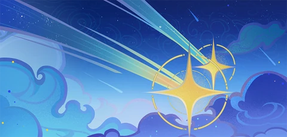

Teyvat & Unknown · Hidden Lore
Descender
A Descender is an outsider whose will can influence a world’s fate. The game has named the Heavenly Principles as the First and the Traveler as the Fourth, while the proposed Second and Third identities still require careful source distinctions.

What the title means
Rene de Petrichor’s Narzissenkreuz Ordo notes make an important distinction: arriving from beyond Teyvat is not by itself enough to qualify. His theory reserves “Descender” for an outsider whose will can contend with a whole world and shape its fate. This is the clearest stated criterion, but the story has not supplied a test that can be applied mechanically to every character.
The label first enters the Traveler’s main-story history through Fatui intelligence shared by Nahida. Later dialogue and books add evidence about earlier arrivals, but a reported hypothesis, a narrator’s account, and a direct on-screen identification do not all carry the same certainty.
First Descender: the Heavenly Principles
In Sumeru, Nahida initially offers the Heavenly Principles as her hypothesis for the First Descender. Song of the Welkin Moon: Act VIII later makes the connection explicit in a conversation with the Three Moon Sisters: they recall the arrival of the “first Descender,” and Columbina identifies that figure as the Heavenly Principles. The sisters recognize the title as a name used by later generations.
The same recollection describes an initial period of peaceful coexistence, followed by conflict over the rules imposed on Teyvat and the punishment of civilizations by Celestial Nails. This is testimony from beings recalling ancient events, so it records their perspective as well as the sequence they describe.
Second Descender: what the records do and do not say
Enkanomiya’s Before Sun and Moon speaks of a “second throne of the heavens” and a war connected with the arrival of a second power. Separately, records about Nibelung describe the Dragon King’s departure beyond the world and his return with power from outside it. These accounts make Nibelung a common candidate for the Second Descender, but no released primary line gives him that numbered title.
The book’s “second throne” and the later phrase “Second Who Came” should not automatically be treated as the same person or as an official Descender number. Their relationship to Nibelung remains an interpretation assembled from separate records, not a settled identification.
Third Descender: the Gnoses and Saarelainen
In Fontaine, Skirk tells Neuvillette that the Gnoses are the remains of the Third Descender. The 7.1 Archon Quest adds a fuller account: Rhinedottir says she once read Celestia’s records about the incident, then describes the Belyi Tsar persuading the Tsaritsa and the Third Descender to open an Abyssal gate. According to her account, after the Heavenly Principles erased the Tsaritsa, the Third ascended to Celestia and offered his life to restore her and protect his descendants, later known as Khaenri’ahns. He agreed to have his remains divided into seven pieces as part of the existing order.
Rhinedottir also says the Third made a conditional curse to enforce the promise, while the Tsaritsa connects that curse to the Heavenly Principles’ current sleep after the Cataclysm. Rhinedottir immediately calls the account “just a story,” so the curse mechanism and its proposed cause should remain attributed to those speakers rather than presented as an independently verified explanation. The quest separately says Irminsul was used to erase the Third’s traces from the world.
Hymns of the Far North, Volume II tells of Saarelainen being cut into seven pieces, but it does not call him a Descender or identify those pieces as Gnoses. The parallel makes him the strongest candidate for the Third; it does not make the identity explicit. HoYoWiki files that book under an archive record titled “Third Descender,” useful as an official catalog association but distinct from the wording of the in-game story.
Fourth Descender: the Traveler and their sibling
Nahida directly tells the player-character Traveler that they are Teyvat’s Fourth Descender. In that same Sumeru conversation, Paimon asks whether the Traveler’s twin is also counted, and Nahida says the twin is not included in the Fatui’s number. The game has not assigned the sibling another number or formally explained their status under Rene’s criterion.
This distinction matters because both siblings came from beyond the world, yet only the Traveler is named Fourth. Later Nod-Krai revelations also show that their arrival and the opening-cinematic separation were not a single simple event: the ship passed Teyvat long ago, and the Traveler now suspects the sibling may have left it earlier. The sibling’s prior life and later place in Teyvat’s records do not supply a numbered Descender title.
The Traveler and Teyvat’s systems
The Traveler remembers the history Irminsul changes for others, and their twin is treated differently in the world’s records. The Traveler also lacks a Vision while using elemental power through Statues of the Seven. These are important observations about this Traveler; the game has not declared each behavior a universal diagnostic for every Descender.
In 7.1, Ronova calls the Traveler a Descender and says the Ley Lines of Teyvat would not accept them. In 7.2, the Esoptron inside the Nail of Retribution detects an external target, then reports an unexpected target and fails to retrieve a database record. That scene does not call the Traveler a Descender or explain the device’s error; it adds another unexplained exception rather than a new definition.
How many Descenders are there?
The Fatui count and the Traveler’s number establish at least four positions, not a closed census. Dainsleif’s earlier wording leaves room for more. The evidence in the released story therefore supports a confirmed First and Fourth, a widely proposed but unnumbered Nibelung, and a strongly implied Saarelainen candidate for the Third.
The Sustainer of Heavenly Principles should not be added as a fifth Descender based only on her role in the opening scene: later sources place Asmoday among the Four Shades, a different category. The remaining open questions include the final count, the Second’s identity, whether Saarelainen is the Third, and how the Traveler’s sibling fits Rene’s definition.
This is an original CoreGG reading guide, not an official HoYoverse article or a reproduction of the game text. Source links below identify the records used so you can check the original context.
Sources & references
Check these sources for the original game text and reference trail.
- Genshin Impact Wiki · lore reference
- In-game transcript · Akasha Pulses, the Kalpa Flame Rises
- In-game transcript · Masquerade of the Guilty
- In-game transcript · True Moon
- In-game transcript · A Rekviem for the Underworld
- In-game transcript · A Yesterday Sent From Beyond
- In-game transcript · A Space and Time for You
- In-game quest recap · The Final Judgment
- In-game quest recap · Bough Keeper: Dainsleif
- HoYoWiki · Third Descender archive record (Saarelainen association)
- Genshin Impact Wiki · Enigmatic Page (I)
- Genshin Impact Wiki · Before Sun and Moon
- Genshin Impact Wiki · Hymns of the Far North
- Source-by-source Descender evidence guide (secondary reference)